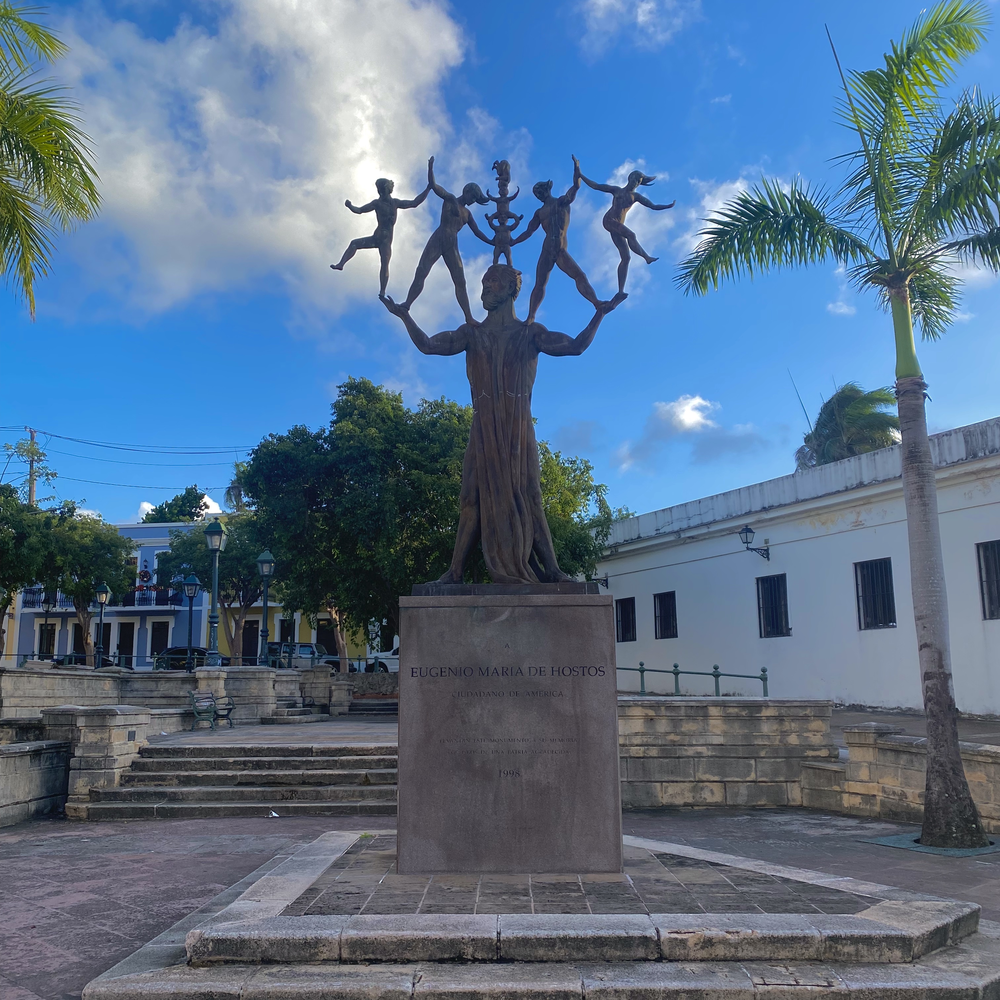
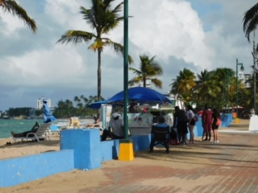

Activities
There are many activities that you could do during your trip to Puerto Rico. In the pueblos, there are many authentic restaurants serving items such as quesitos, pastelitos, relleno de papa, bacalao, and many more staple Puerto Rican dishes.
If you're a trendsetter loking for the next hottest fashion trend, you could take a stop at Plaza de las Americas, which is the largest mall in the Caribbean.
Or for our history buffs, you could take a guided tour through El Morro de San Juan which is where battles took place in the Spanish-American War.
Below is a list of activities and places that could be on your list of things to do during a trip to the beautiful island of Puerto Rico.

Photos Courtesy of Natasha Martinez
Old San Juan Walking Tour
Price: Free
Target Age: All Ages
Located right across the street from El Morro, you'll need about 2.5 hours to explore Plaza de Beneficencia (Charity Square). Pictured above is a statue of Eugenio Mario de Hostos, an advocate for Puerto Rico's independence amongst many other great attributes.

Photos Courtesy of Natasha Martinez
El Yunque National Rainforest
Price: Free
Target Age: All Ages
El Yunque Tropical Rainforest is the only rainforest in the United States. Located in Rio Grande, Puerto Rico, a true force of nature in front of you as you travel through this literal jungle full of absolutely breathtaking views. Currently the open trails are: Mount Britton, Britton Spurr, and El Yunque to Pico El Yunque, along with the service road being open. Due to the hurricane and the damage to trees the canopy is very open which makes for great views of the island from above.

Photos Courtesy of Natasha Martinez
Beaches in Puerto Rico
Price: Free
Target Age: All Ages
The island is full of many astonishing beaches. One of the first beaches that you will cross paths with leaving SJU Airport is Isla Verde in Carolina, Puerto Rico. A great beach for swimming, snorkeling ,surfing or just to lay on the sand and sunbathe.